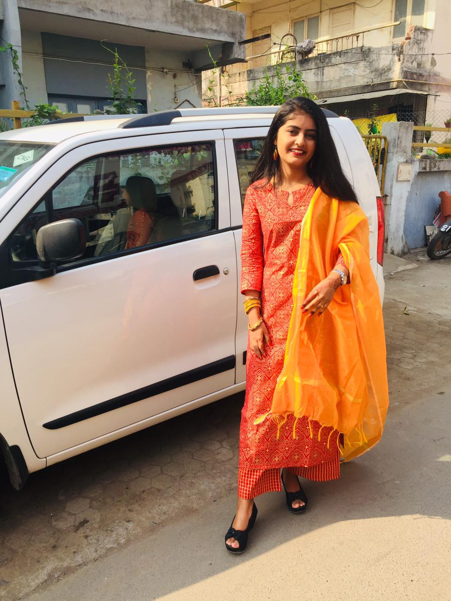

MY FAVOURITE TEACHERS

Miss Sanjoli Sogani Mam
Miss Abhisha Parekh Mam
Miss Sanjoli Sogani Mam
Miss Abhisha Parekh Mam
Sanjoli mam is my coding teacher and my favourite teacher,she is like a mentor and a older sister to me.I like her friendly nature and the way she explains is the best way and i get the things so quickly!! she always helps me when i am facing difficulties and understands me and my problems she always encourage me to do new things and her advice are very best with which i get new ideas and fun ways to create new things.“How are you? What is wrong with you? Why are you so upset, let me know?” These were the words which showed her concern for me. from my face and voice she understands what i am thinking.It was not only this human side of her that made her a favourite teacher. As a teacher of her subject, she was the best. She knew hier subject so well and more than that the way she explained the difficult topics in such a lucid way, which made her such a respected teacher.She always belives me and have a confidence that i will surely do new thigs.
Abhisha mam is my science teacher and my favourite teacher,she is like mentor to me. Very first i hated science but today it's my favourite subject because of her.As a teacher of her subject, she was the best. She knew hier subject so well and more than that the way she explained the difficult topics in such a lucid way, which made her such a respected teacher.Her nature is very friendly and peaceful she always encourages me for participating in new competions and activites and she is so confident that i will surely be succseful and her confidense and beliveing on me gaves me more exitment to do new things even if i could do she used to say participation is important than winning and this words gives me more power to try a second chance.Actually she is a favourite teacher not only mine but of a majority of students of the school. It is her kind, consideration and loving attitude towards her students which makes her such a favourite of all. She is so caring and so concerned about all and everybody and about their problems.She now left the school but will be my favourite teacher forever.
